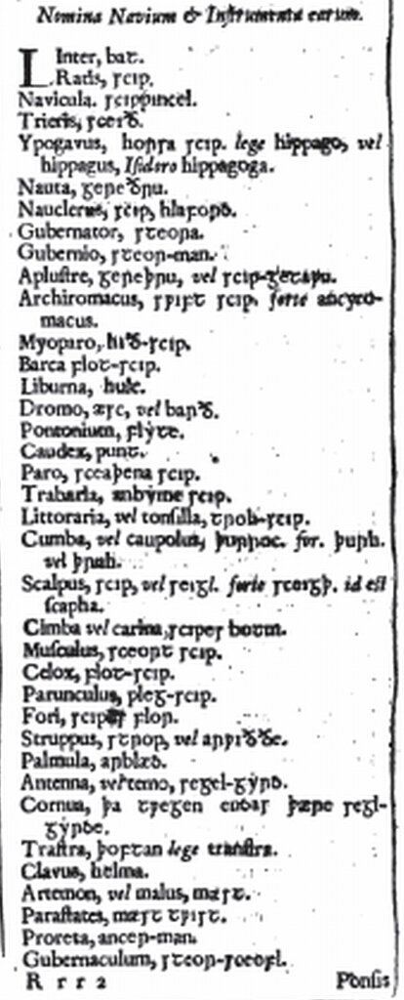
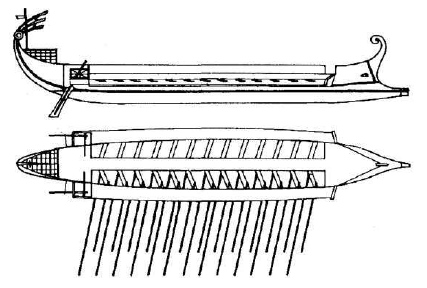
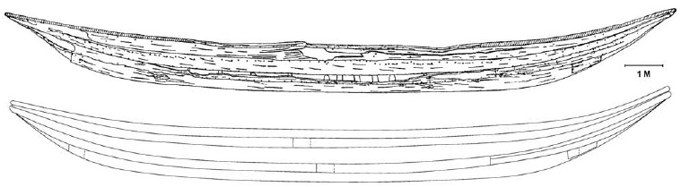
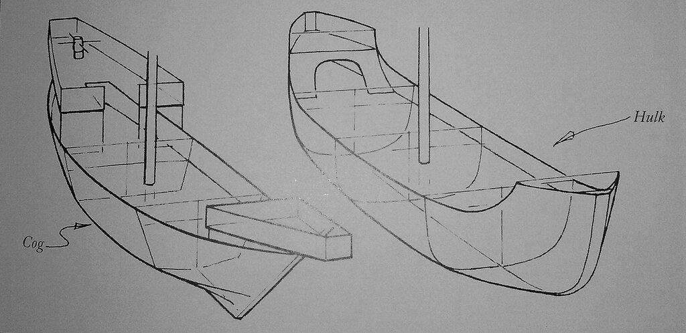

Не было бабе заботы, так купила порося. Примерно в таком положении я оказался, попытавшись разобраться, что же такое хольк (холк, хулк, халк – каждый выбирает для себя свой вариант).
Таинственный тип корабля. «Misterious». Он вроде как бы есть в истории, а вроде как его и нет. В наших официальных морских словарях он и вовсе не упоминается. Попытки найти концы, а точнее начало его истории, основываясь на этимологии термина holk заводят нас в тупик. Ученые люди разделись здесь на два лагеря: одни считают, что термин этот, а следовательно и первые корабли, им описываемые, произошли от древней техники строения корпуса судов из выдолбленных стволов деревьев, как об этом пишет, например, Н.П.Боголюбов:
Holk, по словарю Ира (Ihre),означаетъ долбленый кряжъ. Производя слово holker отъ holk, онъ объясняетъ, что холькеры были небольшiя лодки однодеревки употреблявшiяся у сѣверныхъ народовъ для прибрежпыхъ и рѣчныхъ плаванiй.br>
Боголюбов Н.П. История корабля, том I (1879)
Таким образом, Боголюбов находит связь между хольками XV-XVI веков и холькерами - гребными судами варягов.
Другие исследователи полагают, что следы холька ведут к кораблю древних греков и римлян, которые назывались Ὁλκάς, holkas , и которые на латыни пишутся как holcas. Упоминания о таких кораблях действительно встречаются в работах многих античных авторов. Так, в «Истории» Фукидида (книга шестая, 44) мы читаем
Столь многочисленно было первое войско, отправлявшееся на войну морем. За ним следовали грузовые суда с необходимыми запасами, а именно тридцать судов с хлебом, с хлебопеками, каменщиками, плотниками и со всеми строительными орудиями, сто барж, по принуждению участвовавших в походе наряду с грузовыми судами. Добровольно с торговыми целями шли за войском много других барж и грузовых судов. Все это переправлялось в то время вместе с войском от Керкиры через Ионийский залив.
Давайте посмотрим греческий текст
τοσαύτη ἡ πρώτη παρασκευὴ πρὸς τὸν πόλεμον διέπλει. τούτοις δὲ τὰ ἐπιτήδεια ἄγουσαι ὁλκάδες μὲν τριάκοντα σιταγωγοί, καὶ τοὺς σιτοποιοὺς ἔχουσαι καὶ λιθολόγους καὶ τέκτονας καὶ ὅσα ἐς τειχισμὸν ἐργαλεῖα, πλοῖα δὲ ἑκατόν, ἃ ἐξ ἀνάγκης μετὰ τῶν ὁλκάδων ξυνέπλει: πολλὰ δὲ καὶ ἄλλα πλοῖα καὶ ὁλκάδες ἑκούσιοι ξυνηκολούθουν τῇ στρατιᾷ ἐμπορίας ἕνεκα: ἃ τότε πάντα ἐκ τῆς Κερκύρας ξυνδιέβαλλε τὸν Ἰόνιον κόλπον.
Здесь греческое ὁλκάδες переведено просто как «грузовые суда». Но по смыслу термин ὁλκάς – это идущее на буксире судно, лишь в ходе исторического развития языка превратившееся в грузовое судно вообще. Так может действительно, оно и стало прототипом для средневековых хольков?
Как мы увидим дальше, здесь не все срастается. Первые сомнения зарождаются при попытке найти название таких кораблей в античной латыни. Там его попросту нет. Также и в латыни средневековой holcas присутствует практически лишь при переводе слова Ὁλκάς в греческих текстах, да в одной из монастырских записей так названы суда для перевозки вина (vinarium). Поэтому вряд ли стоит полагаться на этимологию, лучше сфокусировать свое внимание на тех характеристиках, которыми хольк наделяется в сохранившихся документах и текстах, а именно на его размер, очертания корпуса, способ движения, географическую привязку, и попытаться сопоставить их с имеющимися артефактами.
В фискальных документах короля Англии Этельреда II Неразумного, относящихся ориентировочно к 1000 году н.э., упоминается парусный корабль hulk, размеры которого примерно совпадают с размерами судна типа киль (keel). Морские археологи нашли несколько мест с останками килей, потерпевших кораблекрушения. Наибольшее судно этого типа имело длину 22,1 м, следующе за ним – не более 16,5 м. Оба были построены в начале XI века. Хольк не мог быть больше, поэтому был очевидно похож на судно, остатки которого известны как судно Utrecht I, т.е. около 18 м длиной. Как мы увидим, это весьма умеренный по размерам корабль. Отсюда становится понятным, почему Эльфрик по прозванию Грамматик (Ælfrīc, 955 г. —1020 г.), англо-саксонский монах-бенедиктинец, в своем словаре (Glossary) пишет: liburna, hulc
Я с трудом нашел это слово в словаре Эльфрика, пока не разобрался, что слова там размещены не по алфавиту, а по темам. Вот часть интересующей нас страницы из словаря, которая опубликована в Словаре Уильяма Сомнера Dictionarium Saxonico-latino-Anglicum (1659) в качестве приложения

Здесь мы, как тот витязь, очутились на распутье. Для нас хорошо известно, что либурна – узкое, быстрое гребное судно.

А хольк – если его брать производным от греческого holkas – грузовое торговое судно, транспорт, чуть ли не баржа. Значит, все-таки, в данном случает hulk является производным не от греческого Ὁλκάς, а от старогерманского hol, holk – долбленый кряж. Именно такие корабли, как те, осколки которых были найдены на месте кораблекрушения Utrecht I, видимо и были первыми хольками. Их корпус своими очертаниями очень напоминает средиземноморскую либурну

Корпус судна, поднятого с места кораблекрушения Utrecht I в дельте Рейна. Внизу – реконструкция корпуса. (Aleydis van de Moortel, 2009) Основу его составляет долбленый кряж из дуба длиной около 14 м и диаметром от 1,2 до 1,5 м. Доски обшивки 8-10 м длиной, 50-60 см шириной и 2-3 см толщиной. Прочность корпусу придавал продольный брус – вельс – длиной 19 м и диаметром ок. 60 см. Взято из Van de Moortel The Utrecht type. Adaptation of an inland boatbuilding tradition to urbanization and growing maritime contacts in medieval Northern Europe (2006)
С другой стороны, здесь хорошо видно, что корпус данного корабля очень похож на русские насады, когда к добленому из одного кряжа корпусу добавляют дощатые борта. Тем самым корпус получает плавные продолжения вверх, а также в нос и корму и как бы становится переходным образцом между долбленой однодревкой и наборным корпусом более поздних эпох. Именно эти специфические формы и стали характерными для нового типа корабля – холька. Именно эволюция этих форм дала возможность значительно увеличить грузовместимость нового типа кораблей – хольков – по сравнению с когами, господствующими тогда транспортными судами. Доказательством этого тезиса может послужить сравнение форм корпуса кога и холька

Рисунок из книги Cogs, Caravels and Galleons: The Sailing Ship 1000-1650, 1994, стр. 45
Хольки сыграли очень важную роль в развитии кораблестроения в Европе. На заре Нового времени хольк становится самым большим мореходным транспортным судном на севере континента и практически полностью вытесняет ког.
Но остаются еще некоторые факты, которые могут добавить ложку дегтя в наше расследование. Об этом в следующий раз.